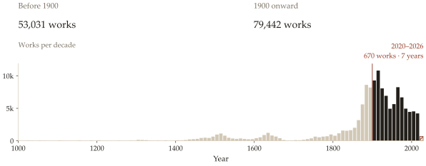
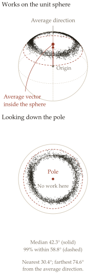

Which encoders, and which works?
From an information theoretic perspective, everything carries some bits of information that can be comprehended by some other system, and what that system holds is its view of the thing (Rovelli 1996).1 In this light, foundation models (deep neural networks/universal function approximator at heart (Hornik et al. 1989))2 have shown remarkable results in approximating the data generation process/distribution of a system, i.e., a compression of it (Bengio et al. 2013; Bommasani et al. 2021).3
Building upon the above view, we pass every artifact, an image or a text, through a foundation model, a large neural network trained on hundreds of millions to billions of samples (even trillions now :)), and take the output representation of the final layer of the network.4 That high dimensional vector is what we are using in the analysis, and we experimented with different foundation models, because each one was trained to do something different and so each one notices different things about an artifact.5
![The actual 224-pixel input crop is divided into patches. Three maps show measured patch-token lengths after captured encoder blocks, with separate logarithmic scales. The end vector has 768 coordinates. Dividing by its length puts this work 42.8 degrees from the corpus average direction. The source is a 330-pixel Commons reproduction. The centre crop removes the sides. The corpus average is inside the unit circle; the artwork is on its boundary. The circle is the plane containing these two vectors, not the first two encoder coordinates.](figures/image_to_vector.svg)

| Encoder | Trained to | Trained on | Size | Vector |
|---|---|---|---|---|
| CLIP (Radford et al. 2021) | find each image’s own caption among many | 400M web images with captions | 304M | 768 |
| SigLIP (Zhai et al. 2023) | say match or no match for each image and caption | English web images with captions | 428M | 1,152 |
| DINOv3 (Siméoni et al. 2026) | describe crops of an image as a teacher network does | 1.7B images, no captions | 303M | 1,024 |
The corpus: WikiArt
Our analysis is primarily based upon the WikiArt dataset here.6
It has 173,337 images, and we keep 172,171, dropping 1,166 on a list stored with the corpus (i.e., duplicates and near-duplicates of other images). Of these, 132,473 have a year we can read between 1000 and 2026, and this dated set is what we call the corpus from here on. It holds 2,958 artists, 199 styles and 65 genres (counting the first style and genre listed for a work).
The corpus is not spread evenly over time (Figure 2). 60% of its works are from 1900 on, and the decades from 1860 to 1940 alone hold close to half of it. So when we compare groups and eras in Q2 and Q3, we cap how many works one artist can bring (usually 20), so that a few prolific artists and a few crowded decades don’t decide the answer.

Back to the vectors: as each one is scaled to length 1, every artwork becomes a point on a sphere, and how different 2 works are is the angle between them.7 The works don’t spread over the sphere, though. In all 3 encoders they sit inside one cone around the direction of their average (i.e., all within some angle of it), and the rest of the sphere is empty. No work sits at the average direction itself either, so the average work is not any real work (Figure 3).8 Everything that follows happens inside this cone.
The cone gives the corpus’s overall extent (we do not map its boundary), but not how the works fill it. So next we look at the structure inside the cone, how the works spread around one work and how far apart they sit (Q1).

References
Footnotes
In Shannon’s theory, information is always between two variables: what one tells about the other, i.e., the uncertainty about the source that a received signal removes (Shannon 1948). Relational quantum mechanics takes a similar view: a system has no state on its own, and the theory “describes only the information that systems have about each other” (Rovelli 1996). Any system can be the observer, a model included.↩︎
Strictly, a network with one hidden layer and enough units can approximate any continuous function on a bounded input set; the theorem says such a network exists, not that training finds it (Hornik et al. 1989).↩︎
An encoder does not see how an artwork was made. It learns regularities of the images (and their captions) that reflect the process that made them. Representation learning aims to recover the underlying factors behind the data (Bengio et al. 2013). What it keeps depends on the objective it was trained on, so each encoder’s vector is a compression shaped by that objective.↩︎
We take the final layer and not a middle one primarily for two reasons. First, for CLIP and SigLIP the final vector is the one their training compares with captions, so its distances are the ones training made meaningful. DINOv3’s training compares the outputs of separate heads on top of the network, and we take the mean of its final-layer patch vectors. Second, the image generators we use later take CLIP’s final vector as input, so the search has to move in this space anyway. We have not compared middle layers.↩︎
Whether these views converge as models grow is an open question (Huh et al. 2024). Take a work’s 10 nearest works in each encoder. Any two of our 3 encoders share a fifth to a third of them, and all three share about 1 in 8. Both are thousands of times what chance gives. Where the encoders agree on the questions below is at the end of Q2 to Q4.↩︎
A public collection of artwork images with title, artist, style, genre and, for most works, a year. We use the Kaggle copy released by Yangyu Wang (MIT licence for the package) to turn images into vectors for research, and show small credited thumbnails of the works we discuss as scholarly commentary. WikiArt.org shows copyrighted works under fair use, and their copyright stays with the rights holders.↩︎
Scaling drops a vector’s length, and for CLIP that length carries something. It varies by about 5% and grows with year (rank correlation 0.43), and abstract works and installations are longer than portraits. Dropping it changes 15% of a work’s 15 nearest neighbours among all 172,171 works, by any artist, while re-encoding the same images changes 0.4%. We checked this in CLIP only, as the raw lengths for SigLIP and DINOv3 were not stored.↩︎
The cone is narrowest in CLIP and widest in DINOv3, and in none of them does a work sit at the average direction. In CLIP, half of the works are within 42 degrees of the average direction and 99% within 59. The closest work to the average direction is 30 degrees away in CLIP, 37 in SigLIP and 33 in DINOv3, and scaling the vectors to length 1 does not by itself force that gap.↩︎